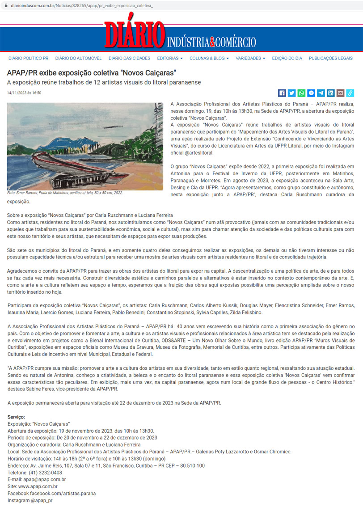
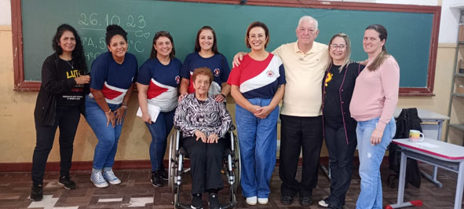
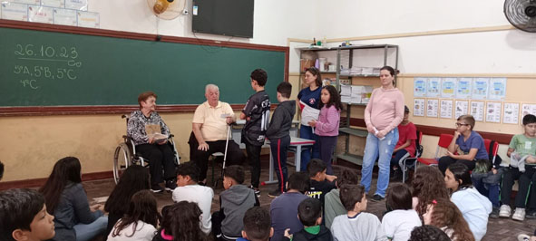
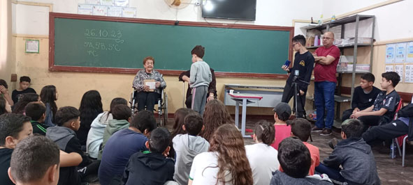
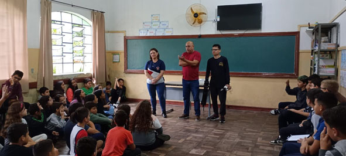
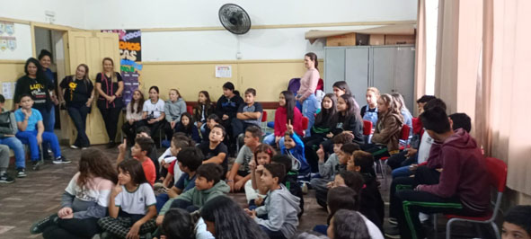
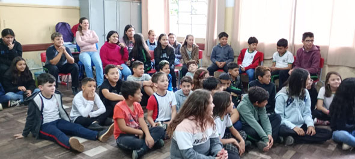
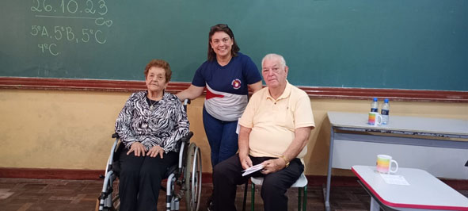
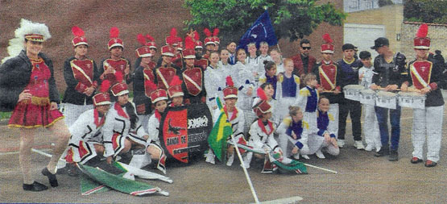

Notícias e Atualidades sobre Morretes.
(Página em construção!)
https://www.diarioinduscom.com.br/Noticias/828265/apap/pr_exibe_exposicao_coletiva_  |
27/10/2023 Passando para deixar o AMOR que foi receber nossos historiadores, para uma roda de conversa com nossas crianças. Sem palavras para expressar nossa gratidão a Dona Laurice Salomão De Bona e o Sr. Éric Joubert Hunzicker, que nos trouxeram além de carinho e atenção, nos deram de presente momentos inesquecíveis de história, cultura e fatos históricos que jamais nos contaram na escola e que agora, ficarão guardados em nossas lembranças. |
       |
Publicação do Jornal Gazeta do Litoral Banda de Percussão Scorpions de Morretes Por Marcos Cardoso  No último dia 27 de agosto, a cidade de São José dos Pinhais, na região metropolitana de Curitiba, foi palco de uma emocionante competição interestadual de bandas e fanfarras. Entre as diversas participantes, a Banda de Percussão Scorpions, de Morretes, brilhou e conquistou o primeiro lugar na categoria de bandas e o terceiro lugar na categoria de baliza sênior. |